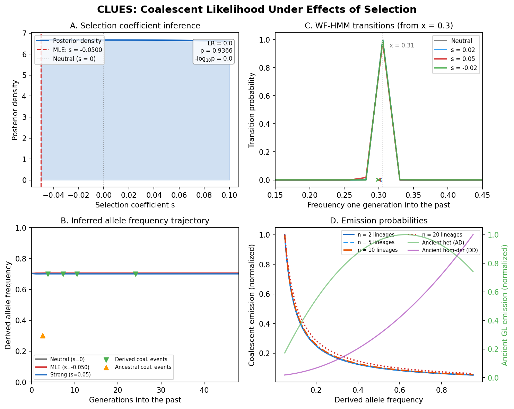

Overview: Detecting Selection
The compass needle: which way is the allele moving, and how fast?
{kind=link}

CLUES at a glance. The Wright-Fisher HMM transition structure governing allele frequency dynamics, coalescent emission probabilities linking gene-tree branch lengths to the hidden allele frequency, importance sampling weights correcting for the proposal distribution, and the selection coefficient posterior with likelihood ratio surface used to test for selection.
This chapter introduces the biological question that CLUES solves, the mathematical framework it uses, and the key insight that connects gene trees to selection. By the end, you’ll understand what CLUES computes and why, setting the stage for the detailed derivations in the chapters that follow.
What Does CLUES Do?
CLUES takes as input:
Gene tree samples at a focal SNP – coalescence times for derived-allele lineages and ancestral-allele lineages, typically produced by Relate’s
SampleBranchLengthsor by SINGER.The current derived allele frequency \(p_0\) in the modern population.
An effective population size trajectory \(N(t)\) (constant or piecewise, from PSMC, SMC++, or a
.coalfile).Optionally, ancient genotype likelihoods – direct measurements of the allele in past individuals, such as from ancient DNA.
And it produces:
The maximum likelihood estimate \(\hat{s}\) of the selection coefficient.
A log-likelihood ratio test with a \(p\)-value for the null hypothesis \(s = 0\) (neutrality).
The posterior allele frequency trajectory \(P(x_t \mid \mathbf{D})\) – a probability distribution over frequencies at every generation in the past.
The Biological Question
Consider a single biallelic SNP – say, the lactase persistence variant in Europeans. Today, the derived allele that allows adults to digest milk has a frequency of about 80% in Northern Europe. Was this allele favored by natural selection, or could it have reached high frequency by chance?
To answer this, we need a model of how allele frequencies change over time.
Under neutrality (\(s = 0\)), the allele frequency performs a random walk – the Wright-Fisher diffusion. At each generation, the frequency jiggles up or down by an amount proportional to \(\sqrt{p(1-p)/2N}\), where \(p\) is the current frequency and \(N\) is the (diploid) population size. Over many generations, this random walk can take the frequency anywhere between 0 (loss) and 1 (fixation), but the expected change per generation is zero – there is no directional bias.
Under selection (\(s \neq 0\)), the random walk acquires a directional bias. If the derived allele confers a fitness advantage \(s > 0\), then individuals carrying it leave slightly more offspring, and the allele frequency drifts upward on average. The expected change per generation is approximately \(s \cdot p(1-p)/2\) (for additive selection), which is largest when \(p \approx 0.5\) and vanishes when the allele is very rare or nearly fixed.
What is a selection coefficient?
The selection coefficient \(s\) measures the relative fitness advantage of one genotype over another. For a biallelic locus with alleles \(A\) (ancestral) and \(D\) (derived), the three diploid genotypes have fitness:
where \(h\) is the dominance coefficient:
\(h = 0.5\) (additive/codominant): the heterozygote is exactly intermediate. Each copy of \(D\) adds \(s/2\) to fitness.
\(h = 0\) (recessive): the heterozygote has the same fitness as \(AA\). Selection only acts on \(DD\) homozygotes.
\(h = 1\) (dominant): the heterozygote has the same fitness as \(DD\). A single copy of \(D\) confers the full advantage.
Typical values of \(s\) in nature range from \(10^{-4}\) (weak selection, hard to distinguish from drift) to \(10^{-1}\) (very strong selection, like drug resistance in pathogens). The lactase persistence allele in Europeans has \(\hat{s} \approx 0.02\).
The Core Idea: Likelihood of Gene Trees Given Selection
The fundamental insight behind CLUES is that the genealogy at a locus is shaped by selection. Under a selective sweep, lineages carrying the favored allele coalesce more rapidly – the genealogy is “compressed” – because the allele was recently at low frequency (fewer copies, faster coalescence). Under neutrality, the coalescence pattern follows the standard coalescent.
More precisely, the coalescence rate among \(k\) derived-allele lineages at time \(t\) is:
where \(x_t\) is the derived allele frequency at time \(t\). When \(x_t\) is small (the allele was recently rare), the rate is high. When \(x_t\) is large (the allele is common), the rate is low. Selection changes the trajectory \(x_t\), which changes the coalescence rates, which changes the probability of the observed gene tree.
This gives us a way to compute \(P(\text{gene tree} \mid s)\): model the allele frequency trajectory as a Hidden Markov Model where the hidden state is the frequency \(x_t\) and the observed data are the coalescence events in the gene tree. The transition probabilities of the HMM depend on \(s\) (through the Wright-Fisher diffusion with selection), and the emission probabilities depend on \(x_t\) (through the coalescent rates above).
The CLUES likelihood decomposition:
P(D | s) = sum_over_trajectories P(D | trajectory) * P(trajectory | s)
^^^^^^^^^^^^^^^^ ^^^^^^^^^^^^^^^^^
coalescent Wright-Fisher
emissions transitions
The HMM efficiently computes this sum using the forward or backward algorithm.
Where Does CLUES Fit in the Pipeline?
CLUES sits at the end of a pipeline that first infers the genealogy and then asks whether selection shaped it:
Sequence data (VCF)
|
v
Relate / SINGER --> Sampled gene trees at focal SNP
|
v
PSMC / SMC++ --> Population size history N(t)
|
v
CLUES --> Selection coefficient + frequency trajectory
The gene tree samples provide the coalescence times; the demographic model provides the baseline expectation under neutrality; and CLUES asks whether the coalescence pattern departs from that baseline in a way consistent with selection.
Why not test for selection directly from the sequence data?
Classical selection tests (Tajima’s \(D\), \(F_{ST}\), iHS, nSL) work directly on sequence variation – allele frequencies, haplotype structure, or linkage disequilibrium. These statistics are powerful but indirect: they capture signatures of selection without modeling the process explicitly.
CLUES takes a different approach: it uses the inferred genealogy to compute a full likelihood under a selection model. This has several advantages:
It produces an actual estimate of \(s\), not just a \(p\)-value.
It naturally integrates ancient DNA data.
It accounts for demographic history (which can mimic selection signals).
It can detect changes in selection over time (multi-epoch models).
The cost is that CLUES requires an inferred genealogy, which is computationally expensive. But since SINGER and Relate can now produce these genealogies at genome-wide scale, this cost is increasingly affordable.
The Mathematical Framework at a Glance
Before diving into the detailed derivations, here is the complete mathematical framework in outline form.
Hidden states. We discretize the derived allele frequency into \(K\) bins \(x_1, x_2, \ldots, x_K\) (typically \(K = 450\)). Frequencies 0 and 1 are absorbing states (the allele is lost or fixed).
Transitions. The transition probability \(P_{ij}\) from frequency \(x_i\) to frequency \(x_j\) in one generation is derived from the Wright-Fisher diffusion with selection. The mean frequency shift per generation is:
and the variance is \(\sigma_i^2 = x_i(1 - x_i) / (2N)\). The transition probability is obtained by integrating a normal distribution with this mean and variance over each frequency bin.
Emissions. At each generation \(t\), two types of evidence constrain the frequency:
Coalescent emissions: the probability of the observed coalescence events among derived and ancestral lineages, given frequency \(x_t\).
Ancient genotype likelihoods: if an ancient individual was sampled at time \(t\), the probability of their genotype given \(x_t\).
Algorithm. The backward algorithm (from present to past) computes \(P(\mathbf{D} \mid s)\) by initializing at the observed modern frequency and propagating backward through time. The forward algorithm (from past to present) combined with the backward gives the posterior \(P(x_t \mid \mathbf{D}, s)\).
Importance sampling. Because the gene tree is uncertain, CLUES averages over \(M\) sampled trees:
where each \(\mathbf{G}^{(m)}\) is a tree drawn from the neutral posterior.
Testing. The log-likelihood ratio \(\Lambda = 2 \ln[P(\mathbf{D} \mid \hat{s}) / P(\mathbf{D} \mid s=0)]\) is compared to a \(\chi^2_1\) distribution under the null hypothesis of neutrality.
In the chapters that follow, we build each of these components from scratch:
Chapter 2 (Wright-Fisher HMM): frequency bins, transition matrix, selection model
Chapter 3 (Emission Probabilities): coalescent density, ancient genotype likelihoods
Chapter 4 (Inference): importance sampling, forward-backward, MLE, hypothesis testing, trajectory reconstruction
By the end, you will have a complete, working CLUES implementation – and you will understand every gear that drives it.